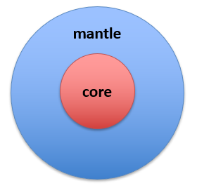

Getting Started
This guide is your first step towards understanding and utilizing the SIR 3S Toolkit.
Note
In order to use the SIR 3S Toolkit, access to SIR 3S models and a licensed SIR 3S version are necessary.
What is SIR 3S Toolkit?
SIR 3S Toolkit is a Python package that provides a programming interface for SIR 3S - a software for the simulation, analysis and optimization of flow processes in gas/water/heat supply networks, plants, pipelines and caverns.
While SIR 3S itself is a graphical user interface (GUI) based application that is primarily operated through manual user input, the SIR 3S Toolkit adds a powerful layer of automation and programmability. It enables users to interact with SIR 3S models through Python code, making it possible to develop custom workflows, perform batch simulations, and integrate SIR 3S into larger analytical or operational pipelines.
At its core, the package wraps basic functionality of SIR 3S, offering a low-level access to the creation, modification and simulation of SIR 3S models. A variety of method operations — such as Get, Set, Add, Delete, and Insert — are available to directly manipulate model components. This gives you a variety of opportunities, e.g.:
{kind=link}
You can build models solely from scratch, defining nodes, pipes, and more, flexibly adapted to your available data sources, thus extending SIR 3S’s built-in import tools.
The analysis of model data and simulation results can leverage the entire Python data science ecosystem, enabling powerful insights using tools like pandas, NumPy, and others.
On top of this core, higher-level functionality is provided in the so-called mantle, enabling more powerful and intuitive interactions with SIR 3S models.
What is the difference between SIR 3S Toolkit and PT3S?
Since SIR 3S already offers PT3S as a Python package for accessing model data, you might wonder: why use the SIR 3S Toolkit if you’re already working with PT3S?
PT3S provides powerful access to a model’s database and calculation results by reading .mx and .db3 files via SQL directly. However, it operates from the outside — offering read-only access to exposed data structures. What it doesn’t offer is a straightforward way to create, modify, or interact with core SIR 3S objects like nodes, pipes, and more.
That’s where the SIR 3S Toolkit comes in. It goes beyond file access and interacts directly with the internal structure of a SIR 3S model, enabling full programmatic control over model creation, editing, and analysis.
If you want to make full use of Python’s capabilities for working with your SIR 3S model, it is currently recommended to use both packages. In the future it is possible that the PT3S functionalities will be integrated into the SIR 3S Toolkit.
Installation
To install the SIR 3S Toolkit, follow these steps:
Obtain SIR 3S: The SIR 3S Toolkit requires an installed SIR 3S version of 90-15 Quebec or higher, which includes the
Sir3S_Toolkit.dll.Install the SIR 3S Toolkit via pip in SIR 3S Environment: Open a cmd and enter the following commands to install the SIR 3S Toolkit in the Python environment in the
Commonfolder of your SIR 3S installation:cd "C:/3S/Common/Python312" # change to your local path python.exe -m pip install sir3stoolkit
Optional: Install the SIR 3S Toolkit via pip in another Python environment: Open a cmd in the desired Python environment (e.g. Anaconda Python installation) and enter the following commands to install the SIR 3S Toolkit:
pip install sir3stoolkit
Optional: Install mantle dependencies: The mantle of the sir3stoolkit contains many additional functions. To reduce the dependencies required for the core installation, they have to be installed seperately if needed. Open a cmd in the desired Python environment (e.g. Anaconda Python installation) and enter the following commands to install mantle dependencies of the SIR 3S Toolkit:
pip install sir3stoolkit[mantle]
To learn how the SIR 3S Toolkit is used in practice, take a look at the Application Examples page.